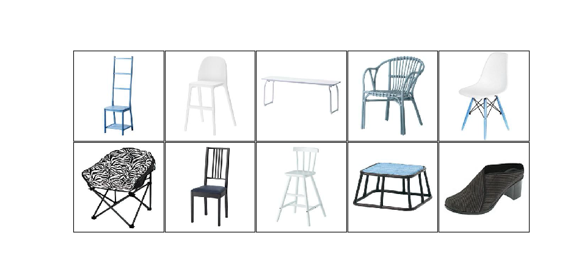

Sketch-Based Image Retrieval
Ramya Sree Boppana (903456349), Ang Deng (902989694), and Sanjana Garg (903475801)Fall 2019: CS 6476 Computer Vision: Class Project
Georgia Tech
Proposal
Midterm Update
Abstract
Sketch based image retrieval systems have many applications in daily life like digital library, search engines, crime prevention, photo sharing sites, and sensing remote systems. The traditional text-based image retrieval systems are limited as with growing database of images it is difficult and unrealistic to annotate all the images for text-based search.In order to tackle this problem, we build a pipeline combining preprocessing the images (gray scaling and edge extraction) and extracting various feature descriptors (SIFT, HOG, and Hu Moments) from the images. Then, we take the extracted features from an input sketch and fetch the most similar k images from the database based on distance metrics corresponding to each type of feature descriptors.
Based on the test dataset which contains images from two different categories split in 50/50 way, we were able to achieve above baseline (50%) accuracy from all three descriptors that we implemented. Our next step will be to try to tweak the parameters of these feature extractors and to try out strategies to combine the features in order to improve the overall performance.
Teaser Figure
Sample output from our application:

Introduction
The traditional text-based image retrieval systems are limited as with growing database of images it is difficult and unrealistic to annotate all the images for text-based search. Using sketch to retrieve images also alleviates the need for generating accurate captions for existing images, which becomes a complex natural language processing problem as the description is required to be more specific and detailed. Sketches have a much greater potential to describe the content and exact details of the image than plain text and are a more direct way of expressing human thoughts than text abstraction.Sketch based image retrieval systems have many applications in daily life like medical diagnosis, digital library, search engines, crime prevention, photo sharing sites, geographical information, and sensing remote systems. With the increasing use of touch screen devices, Sketch-Based Image Retrieval (SBIR) has relevant applications in e-commerce platforms also.
Currently we are working with regular RBG photographs, but the skeches are only black and white. We are not designing any new way to solve this problem, but building from scratch using knowledge we obtained from class lectures and researches.
Approach
In our approach, we aim to tackle the following aspects of sketch-image differences:- Visual Cue Imbalance: The sketches have a holistic shape and salient local shapes while the images are abundant in details on shape, texture, and color.
- Abstraction Gap: The sketches are usually simplified version (missing details) of images with random distortion (the randomness in strokes) and unrealistic disproportion (object parts being unrealistically smaller or bigger).

Pre-Processing Phase
In this phase, we pre-process the dataset to extract features. For every image in the dataset, we perform the following steps.Feature/Edge extraction
Convert the image to its gray intensity representation. Extract local edge or global shape features and encode them in a feature vector using representations like histogram. The histogram based features are efficient for similarity comparison and they can also tolerate random distortions in the sketches due to the grid division scheme in feature extraction. Edge/shape extraction addresses the visual cue imbalance. Since the sketches are generally composed of strokes which are mostly edges, it is intuitive to compare edge maps of images with sketches. This also addresses the simplification sub-aspect of the abstraction gap.Some of the feature extraction methods we tried are described below.
- HOG - Histogram of Oriented Gradients HOG encodes the distribution of directions of gradients (oriented gradients) as features. The implementation of descriptor is as follows. Gradients- magnitude and direction of the image are calculated. The image is divided into windows of size 64 x 64. [The choice of this window size is described in the experiments and results section below]. For each window, histogram of gradient directions is calculated. The histogram is divided into 9 bins. Each pixel contributes the weight(gradient magnitude) proportionally to the bins it's angle is falling between. To make the descriptor invariant to changes in illumination, the 64 x 64 window is normalized by considering a block of size 128 x 128 which has 4 64 x 64 windows and these 4 histograms (1 of each window) of size 9 x 1 are concatenated to a histogram of size 36 x 1. And, this 128 x 128 block is slided along horizontally by 64 pixels and veritcally by 64 pixels making it to a total of 3 x 3 positions as the images of shoe dataset are of size 256 x 256. This implies that the feature vector is of size 3*3*36 = 324. A 256 x 256 = 65,536 image is now represented with a feature vector of size 324.
- SIFT The scale-invariant feature transform (SIFT) is used to detect local features in images. It transforms an image into a large collection of feature vectors, each of which is invariant to image translation, scaling, and rotation, partially invariant to illumination changes and robust to local geometric distortion. These features share similar properties with neurons in primary visual cortex that are encoding basic forms, color and movement for object detection in primate vision. Key locations are defined as maxima and minima of the result of difference of Gaussians function applied in scale space to a series of smoothed and resampled images. Low-contrast candidate points and edge response points along an edge are discarded. Dominant orientations are assigned to localized keypoints. These steps ensure that the keypoints are more stable for matching and recognition. SIFT descriptors robust to local affine distortion are then obtained by considering pixels around a radius of the key location, blurring and resampling of local image orientation planes. The feature descriptor is of size m x 128 where m is the no of keypoints identified. Each 1 x 128 vector is a feature vector representation of the window around that keypoint.
- Hu Moments Hu Moments generates descriptors based on the outer contours of an shape. It is invariant to translation, size and rotation. We consider this a global shape feature descriptor.
Calculating histogram over a patch not only makes the representation compact, but also makes it robust to noise in gradients. Operating on local windows makes the descriptor invariant to geometric and photometric transformations.
One challenge we faced with HOG is the selection of window size which is discussed in the parameter selection section below.
Hu Moments is based on the idea of image moments which is a certain particular weighted average (moment) of the image pixels' intensities, or a function of such moments, usually chosen to have some attractive property or interpretation. We chose Hu Moments because it is fit for describing the countour of objects. To use it, we first find the contour of the sketch/image and then binarize the image based on this contour. One challenge with that is that a lot of the sketches do not have a closed contour. To counter that, we used the dilation + erosion operation to connect the broken lines. Simple properties of the image which are found via image moments include area (or total intensity), its centroid, and information about its orientation. Length of the descripter vector for Hu Moments is 7.
Retrieval Phase
This is the phase in which the query image is processed to retrieve similar images.- Feature extraction Similar to the feature extraction step of the pre-processing phase, we extract features from the input sketch image and form a feature vector.
- Similarity comparison
- L2 Norm - L2 Norm/Euclidean distance metric is used to compare the features extracted using SIFT and Hu Moments.
- L1 Norm - L1 Norm/Manhattan/Cityblock distance metric is used to compare the features extracted using HOG.
The top 'k' similar images from the above step are retrieved as output.
Experiments and Results
Experimental Setup
- The
Shoe Dataset
This dataset is organized into two categories of photos and sketches - shoe and chair. Images and sketches are of different scales and orientations. We first start with a subset of this dataset which has 200 images of shoes and chairs each and 200 sketches of shoes and chairs each.- Input for preprocessing - 200 images of shoes and 200 images of chairs
- Output of preprocessing - 400 feature vectors for each image
- Input for Retrieval phase - 200 sketches of shoes and 200 sketches of chairs as query sketches
- Output of Retrieval phase - Top k similar images for each query sketch
- The
Sketchy Database
This is the first large-scale collection of sketch-photo pairs. The dataset has 125 categories of objects with 100 images per category and 75,471 sketches of 12,500 objects.- Input for preprocessing - 100 images of each of the first 50 categories i.e. a total of 5000 images
- Output of preprocessing - 500 feature vectors for each image
- Input for Retrieval phase - All the sketches of each of the first 50 categories. Total no of sketches is 30,454
- Output of Retrieval phase - Top k similar images for each query sketch
Evaluation metrics
We will be evaluating the performance of our system (different descriptors and different parameters) using the below metrics.- Precision at k: For a given query sketch image, precision at k images (P@k) is (e.g., P@10 or "Precision at 10") corresponds to the number of relevant images among the top k images retrieved.
- Average Precision at k per category: We evaluate the performance of our system for each category of images in the dataset using this metric. Calculate P@k for each sketch image in the category and return the average of P@k scores.
- Average Precision at k per dataset: Every sketch image in the dataset as query image and return the average of P@k score for each query.
- Recall at k: For a given query sketch image, recall at k images (R@k) is (e.g., R@10 or "Recall at 10") corresponds to the fraction of the number of relevant images retrieved from the total relevant images.
- Average Recall at k per category: We evaluate the performance of our system for each category of images in the dataset using this metric. Calculate R@k for each sketch image in the category and return the average of R@k scores.
- Average Recall at k per dataset: Every sketch image in the dataset as query image and return the average of R@k score for each query.
Baseline of the shoe dataset
Since we have a 50/50 divide in the candidate images of the two catogories, the baseline of our approach will be 0.5.Comparing the three descriptors by average precision-recall plots for the shoe dataset
Here, by average we mean that we calculate the precision and recall values for each and all of the input sketches and then calculate the average performance. We provide the graphs both for over all and for each sketch input category.- HOG
Window size: 64 x 64


- SIFT


- Hu Moments


| Metric | K | HOG | SIFT | Hu Moments |
|---|---|---|---|---|
| Average Precision(Overall) | 10 | 0.928 | 0.541 | 0.600 |
| Average Precision - Chairs | 10 | 0.914 | 0.858 | 0.630 |
| Average Precision- Shoes | 10 | 0.942 | 0.225 | 0.572 |
| Average Recall | 190 | 0.605 | 0.490 | 0.484 |
Analysis of the shoe dataset results
- Overall, HOG performs better in terms of both precision and recall for both the image categories as it captures the local shape within an image which is a crucial information for SBIR as the query images are essentially texture less sketches that describe the shape of objects.
- Due to the absence of significant keypoints in the shoe sketches, performance of SIFT is poor for that category.
- Hu Moments is more primitive and is not biased towards any of categories as it captures global shape information. Compared to the other two descriptors, Hu Moments performs better in terms of memory and retrieval time because of the very short feature vector of length 7.
Parameter Selection for HoG
Here, we show the precision and recall values for different window sizes of HOG for the shoe dataset.- Window size = 16 x 16

- Window size = 32 x 32


- Window size = 128 x 128


| Metric | K | 16x16 | 32x32 | 64x64 | 128x128 |
|---|---|---|---|---|---|
| Average Precision - Chairs | 10 | 0.407 | 0.765 | 0.914 | 0.853 |
| Average Precision- Shoes | 10 | 0.991 | 0.985 | 0.942 | 0.872 |
Cascading weak descriptors
We experimented with cascading SIFT and Hu Moments which are weak descriptors as per the above shoe dataset results. The cascading is as follows. For each query sketch- Top 300 similar images out of the total 400 images are retrieved based on SIFT.
- Top 150 similar images of 300 images are retrieved based on Hu Moments.
- Top 50 similar images of 150 images are retrieved based on SIFT.
- Top 10 similar images of 50 images are retrieved based on Hu Moments.
| Metric | K | SIFT | Hu Moments | Cascaded |
|---|---|---|---|---|
| Average Precision | 10 | 0.5410 | 0.6000 | 0.6085 |
| Average Recall | 10 | 0.0270 | 0.0300 | 0.0304 |
| Average Precision - Shoes | 10 | 0.225 | 0.572 | 0.577 |
| Average Precision - Chairs | 10 | 0.858 | 0.630 | 0.640 |
The sketchy dataset experiments and results
- HOG
Below are the precision recall values are calculated at k = 5, 10, 50, 90, 95 for the first 50 categories of the sketchy dataset with total images = 5000 and query sketches = 30,454. The first graph shows the results of the average of all the categories. The second graph shows the best performing category- door and the last graph shows the worst performing category- crocodilian in terms of average precision.
- SIFT
Below are the precision recall values are calculated at k = 5, 10, 50, 90, 95 for the first 10 categories of the sketchy dataset with total images = 1000 and query sketches = 30,454. The first graph shows the results of the average of all the categories. The second graph shows the best performing category- ant and the last graph shows the worst performing category- bear in terms of average precision.

- Hu Moments
Hu Moments feature can't be extracted directly from the images of the sketchy dataset. This is due to the presence of background along with the object of interest. So, the foreground and background cannot be separated like it is done automatically with thresholding for the shoe dataset. Below are the images of chair category from each of the two datasets- image from the shoe dataset is on the left and image from the sketchy database is on the right.
Analysis of the sketchy dataset results
- For k = 10, the average precision of HOG for 50 categories is 0.0934, SIFT for 10 categories is 0.086.
- For HOG, the average precision is highest for the category of door among the first 50 categories which is 0.548. And, the least average precision is 0.0006 for the category of crocodilian.
- For SIFT, the average precision is highest for the category of ant among the first 10 categories which is 0.678. And, the least average precision is 0.0 for the category of bear.
- For the category of shoes, average precision at k=10 for HOG is 0.942, SIFT is 0.225 and Hu Moments is 0.572.
- The poor performance of these descriptors with the sketchy database is due to the inability of these traditional descriptors to handle the below variations present in the sketchy dataset:
- The images have background along with the object of interest. The object is not gauranteed to be at the center of the image.
- Scale, orientations, illumination vary.
- There are occlusions.
- Object of interest may be only partially present in the image.
- Object features indistinguishable with the features of background. The first two images are of crocodiles and the last image is of ant.
- Partially drawn sketches. Below are partially drawn airplane, crocodilian and apple
- Sketches with disconnected boundaries. Below is a bear sketch.
- Poorly drawn sketches. The first sketch is supposed to be of a crocodilian, second one is supposed to be an alarm clock
- Unnecessary details like hand in the below image along with the sketch of banana

Qualitative results
Success Cases:
- HOG- Shoe dataset

- SIFT- Shoe dataset

- Hu Moments- Shoe dataset


- Hog- Sketchy dataset
Failure Cases:
- HOG- Shoe dataset

- SIFT- Shoe dataset

- Hu Moments- Shoe dataset

- Hog- Sketchy dataset
- For the first query, potential reasons for the failure in HOG descriptors is that some shoes may have similar distribution of gradient values as the chairs.
- In SIFT discriptors, it might be that there is not enough interest points in shoe images due to the lack of sharp edges that SIFT is able to identify.
- For Hu Moments, the lack of degree of freedom and the limited information that it makes use of may be a contributing factor.
- The failure of last query of category -crocodilian is due to the incomplete sketch and due to the failure reasons discussed in the above analysis section.
Conclusion and future work
SIFT has been a hot research field in recent years and has attracted attention from many pioneering CV experts due to its wide range of applications. We took the approach of experimenting and comparing a few feature descriptors to determine which technique works best for Sketch-Based Image Retrieval. Our current results show above baseline performance even though HOG performs the best out of HOG, SIFT and Hu Moments.We conclude that hand-crafted features like HOG, SIFT and Hu Moments perform reasonably well on sketch based image retrieval tasks where objects form the central part of image and have no background. However, these features fail when applied to fine-grained image retrieval and to a dataset containing background information, varying orientations and real-world photos in general. This is the reason why we weren't able to get decent results on the Sketchy database using these features. We also notice that the inability of these features to perform is significantly affected by the edge detection technique used. We used off the shelf Canny edge detection which is a popular but not a very sophisticated technique for edge detection. Specifically, it doesn't give an outline of the object or the scenery in the image but also categorizes textures as edges which can produce a lot of noise in the images.
As an extension to this, we would like to experiment with the edge detection step used in pre-processing. This is particularly relevant for the Sketchy Database since using more sophisticated algorithms for edge detection will give an outline of the objects/scenery, ignoring the texture regions. Another extension, would be to embed the images and sketches in the same space and using similarity metrics in that space to retrieve images from sketches. This would involve employing deep networks for generating embeddings.
References/Citations
[1] Li, Y. & Li, W. Machine Vision and Applications (2018) 29: 1083. https://doi.org/10.1007/s00138-018-0953-8[2] M. Eitz, K. Hildebrand, T. Boubekeur and M. Alexa, "Sketch-Based Image Retrieval: Benchmark and Bag-of-Features Descriptors," in IEEE Transactions on Visualization and Computer Graphics, vol. 17, no. 11, pp. 1624-1636, Nov. 2011.
[3] Xiao, Changcheng & Wang, Changhu & Zhang, Liqing & Zhang, Lei. (2015). Sketch-based Image Retrieval via Shape Words. 571-574. 10.1145/2671188.2749360.
[4] C. Xiao, C. Wang, L. Zhang, and L. Zhang, “IdeaPanel,” in Proceedings of the 5th ACM on International Conference on Multimedia Retrieval-ICMR '15, pp. 667-668 (2015).
[5] Aggarwal C.C., Hinneburg A., Keim D.A. (2001) On the Surprising Behavior of Distance Metrics in High Dimensional Space. In: Van den Bussche J., Vianu V. (eds) Database Theory — ICDT 2001. ICDT 2001. Lecture Notes in Computer Science, vol 1973. Springer, Berlin, Heidelberg
[6] Ming-Kuei Hu, "Visual pattern recognition by moment invariants," in IRE Transactions on Information Theory, vol. 8, no. 2, pp. 179-187, February 1962.